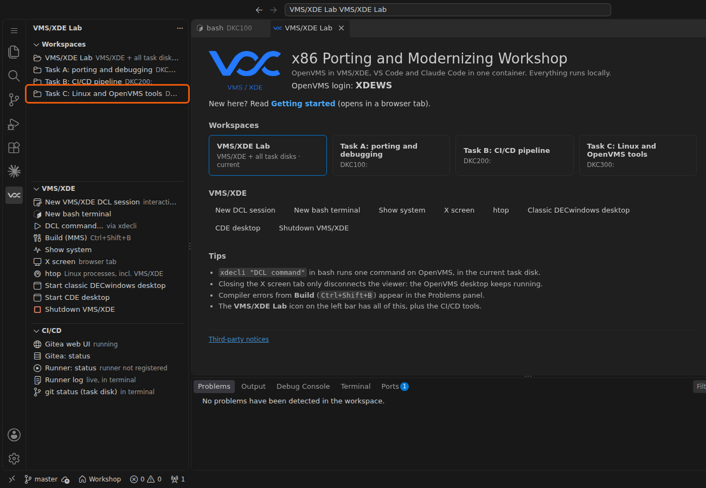
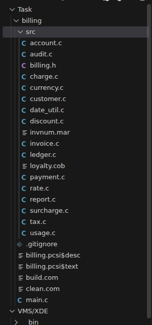
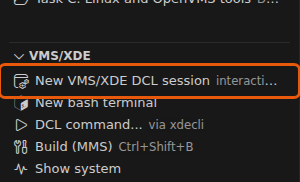
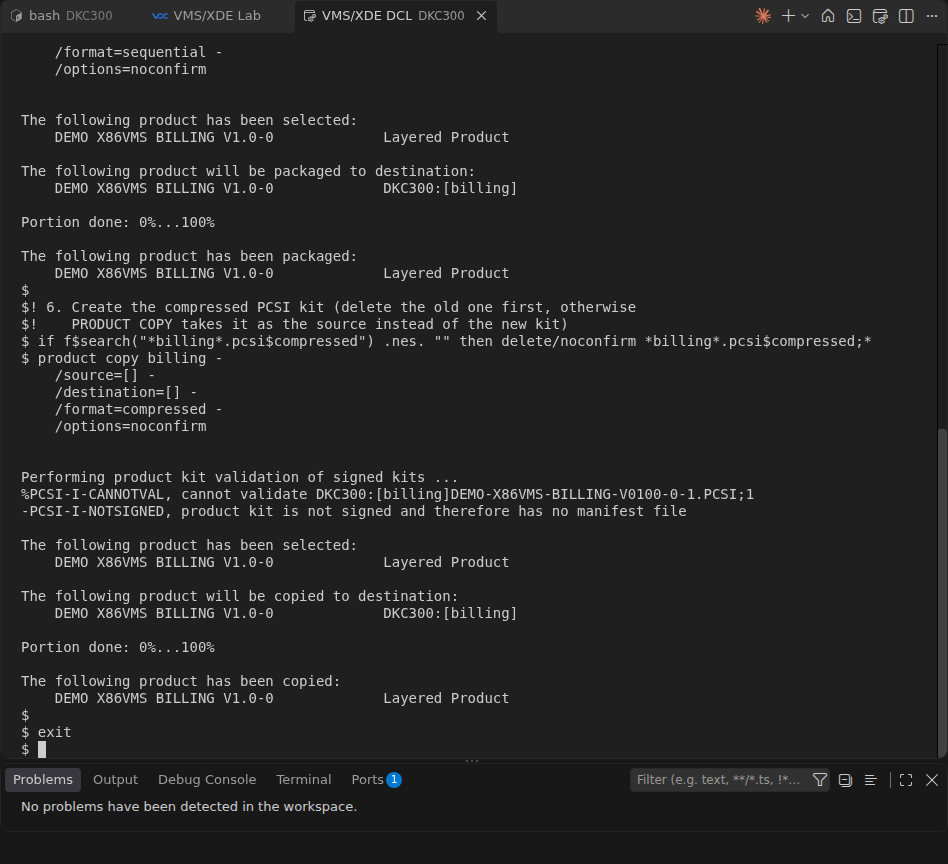
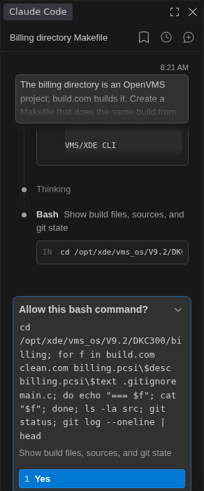
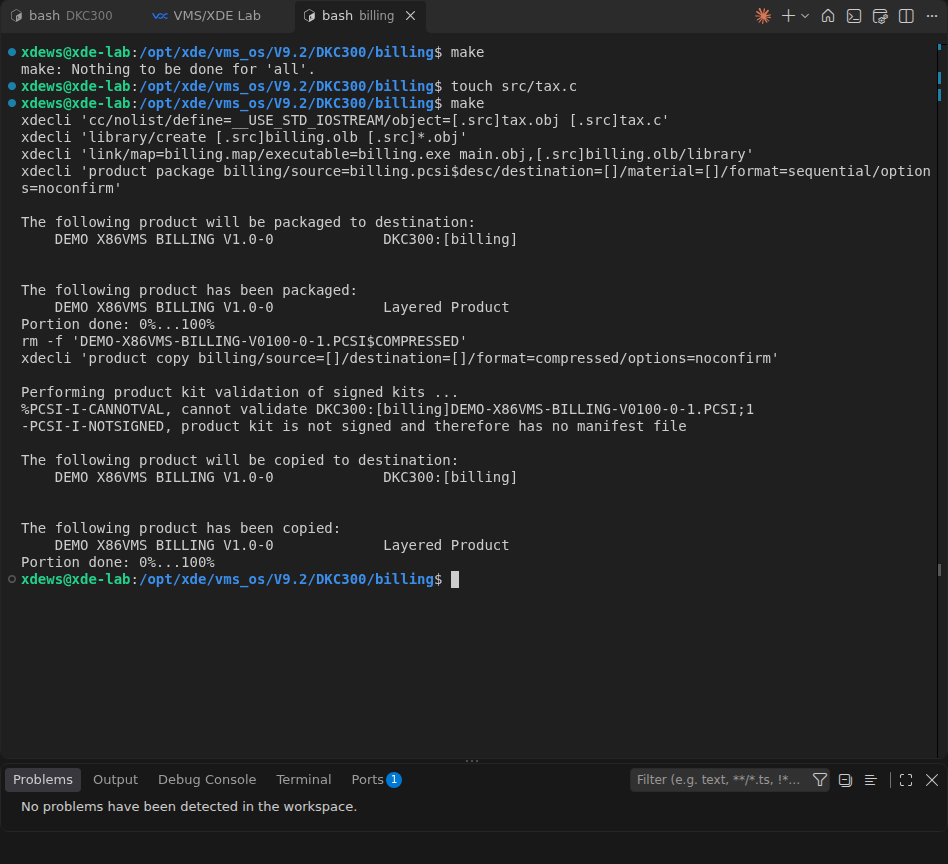
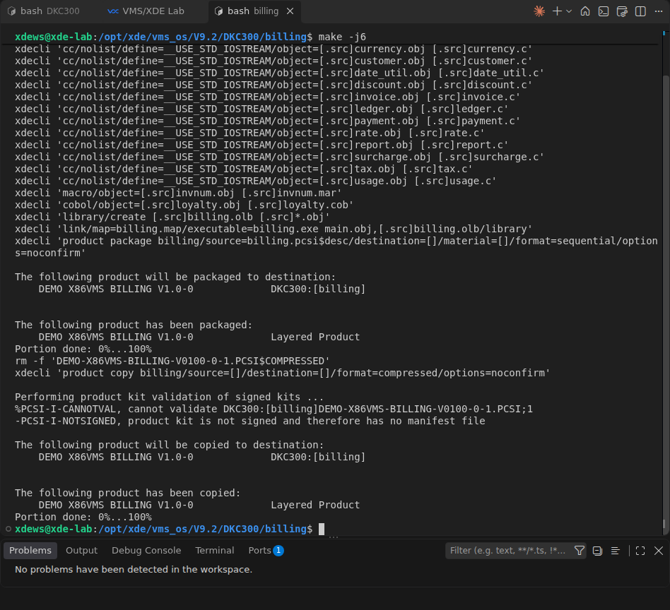

Using Linux and OpenVMS developer tools together
Build an existing OpenVMS project from Linux with a Makefile that runs every OpenVMS step through xdecli: only changed sources are rebuilt, and independent compiles run in parallel.
1 · Introduction and setup
Your team maintains BILLING, an OpenVMS program in C, with one module in MACRO-32 and one in COBOL. Its build procedure build.com compiles every source file, one after another, in one process. It is not incremental: it compiles everything every time, even when you changed only one file. In this task Claude Code writes a Makefile for it. GNU make runs on Linux in your container and starts each OpenVMS step with xdecli, so it can skip what is up to date and run independent compiles at the same time.
xdecli, in the OpenVMS directory that matches the Linux folder. Independent compiles run at the same time.Set up
Before you start: complete Getting started (container, VS Code, Claude Code, terminals and git). The steps below are only the ones for this task.
This task uses Claude Code in the pane on the right, as in Getting started. The terminal alternative: Getting started, G5.
-
Open the Task C workspace: in the VMS/XDE Lab side bar, under Workspaces, click Task C: Linux and OpenVMS tools. The window reloads with the task disk
DKC300.
-
OPTIONALIn the Explorer, expand billing and src. The library sources in
srcare 15 C files,invnum.mar(MACRO-32) andloyalty.cob(COBOL);main.cis the program.billing.pcsi$descandbilling.pcsi$textdescribe the PCSI kit.
billing.C0 · Meet BILLING
You build BILLING the way the team does today, with its build procedure.
-
OPTIONALOpen
billing/build.com. Its header lists the six steps: compile the 17 library sources (C, MACRO-32 and COBOL), put them in the object libraryBILLING.OLB, compilemain.c, linkBILLING.EXE, create the PCSI kit, and create the compressed kit. Each step waits for the one before. -
Open an OpenVMS session: in the VMS/XDE view click New VMS/XDE DCL session. At Username: type
XDEWSand press Enter; there is no password. You get a$prompt. All OpenVMS commands in this guide are typed here.
-
Go to the project. A DCL session starts in your OpenVMS home directory, not in the task disk.
SET DEFAULT DKC300:[billing]
-
Build with the team's procedure. It compiles all 18 source files, links the program and creates two PCSI kits:
DEMO-X86VMS-BILLING-V0100-0-1.PCSIand the compressedDEMO-X86VMS-BILLING-V0100-0-1.PCSI$COMPRESSED— every time you run it, whether anything changed or not.@build.com
The following product has been copied: DEMO X86VMS BILLING V1.0-0 Layered Product Portion done: 0%...100%
The end of the build: PRODUCT COPYhas created the compressed kit. -
OPTIONALRun the same build from Linux. Open a bash terminal (in the VMS/XDE view click New bash terminal; it starts in the task disk).
xdecliruns one DCL command, with the current bash folder as its OpenVMS default directory. This is how the Makefile will run each step.cd billing xdecli '@build.com'
DIR DEMO-*
Directory DKC300:[billing] DEMO-X86VMS-BILLING-V0100-0-1.PCSI;1 DEMO-X86VMS-BILLING-V0100-0-1.PCSI$COMPRESSED;1 Total of 2 files.
C1 · Ask Claude Code for a Makefile
You ask Claude Code to turn build.com into a Makefile. Claude reads the project, writes the Makefile and builds with it.
-
Delete the build output of C0.
@clean.com
-
Ask Claude. Paste this prompt into the Claude Code pane on the right. It tells Claude the one thing it can't know from the files: how this machine reaches OpenVMS.
The billing directory is an OpenVMS project; build.com builds it. Create a Makefile that does the same build from Linux, including both PCSI kits, then run it. On this machine, xdecli runs a DCL command on a VMS/XDE OpenVMS system, in the VMS directory that matches the current Linux directory. Run `xdecli --help` first. Requirements: incremental builds, works with `make -j6`, `make clean` runs clean.com, `make run` runs the executable. Verify by building and running the result.
Claude asks before it writes a file and before most commands. Read each request and allow it. Claude needs a few minutes: it reads
build.com, writesbilling/Makefile, builds, and runs the program.
Claude first reads the project. xdecli,ls,cat,grepanddiffrun without asking; for other commands it asks: read the command, then choose Yes. -
OPTIONALOpen
billing/Makefileand see how it callsxdeclifor each step: compiling, creating the library, linking and building the PCSI kits.
billing/Makefile, then run make clean: object files left by another Makefile can have other names than the ones the reference expects. To start over completely, run git clean -fdx && git checkout . in a bash terminal in billing: the project is a git repository, so this restores it as handed out.cd /opt/xde/vms_os/V9.2/DKC300/billing make clean && make && make run ls DEMO-*
Ledger total $2250.57 Audit checksum 14648627 DEMO-X86VMS-BILLING-V0100-0-1.PCSI 'DEMO-X86VMS-BILLING-V0100-0-1.PCSI$COMPRESSED'
C2 · Incremental builds
make compares file times: a result is built again only if a file it depends on is newer. You change nothing, then one file, and watch what make does. The commands run in the bash terminal of C1, in billing.
-
Build again without changing anything. Every result is newer than its sources, so make has nothing to do and does not start OpenVMS at all.
make
make: Nothing to be done for 'all'.
-
Change one source file.
touchgivessrc/tax.ca new time stamp, as if you had edited and saved it.touch src/tax.c
-
Build again. make compiles only
tax.c, then redoes the steps that depend on it: the library, the link and the two kits. The 15 other sources are not compiled.make
xdecli 'cc/nolist/define=__USE_STD_IOSTREAM/object=[.src]tax.obj [.src]tax.c' xdecli 'library/create [.src]billing.olb [.src]*.obj' xdecli 'link/map=billing.map/executable=billing.exe main.obj,[.src]billing.olb/library' xdecli 'product package billing/source=billing.pcsi$desc/destination=[]/material=[]/format=sequential/options=noconfirm' rm -f 'DEMO-X86VMS-BILLING-V0100-0-1.PCSI$COMPRESSED' xdecli 'product copy billing/source=[]/destination=[]/format=compressed/options=noconfirm'

cc command, for tax.c; a second make says Nothing to be done again.C3 · Parallel builds
The 18 source files don't depend on each other, so make can compile them at the same time. Each xdecli call is its own OpenVMS process, and -j6 lets make run up to six of them at once.
-
Delete the build output, so the next build is a full one, like
@build.comin C0.make clean
-
Build everything with six jobs. make prints each command when it starts it, so the first six compile commands appear together, before any output; the next ones start as soon as one finishes.
make -j6

-
OPTIONALWatch the parallel jobs. In the VMS/XDE view click htop, then run
make cleanandmake -j6again in the bash terminal: htop lists several VMS/XDE processes, one per running compile.
make -j6 builds the PCSI kit DEMO-X86VMS-BILLING-V0100-0-1.PCSI and the compressed kit DEMO-X86VMS-BILLING-V0100-0-1.PCSI$COMPRESSED, and its output starts with several cc commands in a row: they run at the same time.Final · Compare with the reference
The Makefile below is the instructors' reference. Compare it with the one Claude wrote for you: the rules can be named or ordered differently, but the ideas are the same.
# Makefile - build the BILLING demo for OpenVMS from Linux. # # Every VMS step (compile, library, link, PCSI) is run by xdecli. # # make build everything up to the PCSI kits # make -j6 the same, compiling 6 files in parallel # make run run BILLING.EXE # make clean delete all build output (runs clean.com) XDECLI = xdecli CCOPT = /nolist/define=__USE_STD_IOSTREAM SRCS = $(wildcard src/*.c) MARS = $(wildcard src/*.mar) COBS = $(wildcard src/*.cob) OBJS = $(SRCS:.c=.obj) $(MARS:.mar=.obj) $(COBS:.cob=.obj) KIT = DEMO-X86VMS-BILLING-V0100-0-1.PCSI KITC = $(KIT)$$COMPRESSED .PHONY: all run clean all: $(KITC) # 1. Compile each library source: src/<name>.c -> src/<name>.obj src/%.obj: src/%.c src/billing.h $(XDECLI) 'cc$(CCOPT)/object=[.src]$*.obj [.src]$*.c' # 1a. Assemble each MACRO-32 source: src/<name>.mar -> src/<name>.obj src/%.obj: src/%.mar $(XDECLI) 'macro/object=[.src]$*.obj [.src]$*.mar' # 1b. Compile each COBOL source: src/<name>.cob -> src/<name>.obj src/%.obj: src/%.cob $(XDECLI) 'cobol/object=[.src]$*.obj [.src]$*.cob' # 2. Create the object library src/billing.olb: $(OBJS) $(XDECLI) 'library/create [.src]billing.olb [.src]*.obj' # 3. Compile the main program main.obj: main.c src/billing.h $(XDECLI) 'cc$(CCOPT)/include=[.src]/object=main.obj main.c' # 4. Link the executable billing.exe: main.obj src/billing.olb $(XDECLI) 'link/map=billing.map/executable=billing.exe main.obj,[.src]billing.olb/library' # 5. Create the PCSI kit $(KIT): billing.exe billing.pcsi$$desc billing.pcsi$$text $(XDECLI) 'product package billing/source=billing.pcsi$$desc/destination=[]/material=[]/format=sequential/options=noconfirm' # 6. Create the compressed PCSI kit (delete the old one first, otherwise # PRODUCT COPY takes it as the source instead of the new kit) $(KITC): $(KIT) rm -f '$(KITC)' $(XDECLI) 'product copy billing/source=[]/destination=[]/format=compressed/options=noconfirm' run: billing.exe $(XDECLI) 'run billing.exe' clean: $(XDECLI) '@clean.com'
| In the Makefile | Why |
|---|---|
src/%.obj: src/%.c … | One rule, one xdecli call per object file. make can rebuild a single file and run several of these rules at once; build.com compiles everything in one process. |
Three src/%.obj rules: .c, .mar, .cob | One per language: CC, MACRO or COBOL. For each object file make uses the rule whose source file exists. |
/object=[.src]$*.obj | The object file gets the lower-case name that make looks for on Linux. Without it, the compiler names it .OBJ. |
[.src] in the commands, src/ in the rules | The rules are for make on Linux; the commands are DCL and use OpenVMS directory syntax. |
$$ | make reads $ itself, so a DCL $ (as in billing.pcsi$desc) is written $$. |
rm -f before product copy | Taken over from build.com: PRODUCT COPY would use an old compressed kit as its source. |
Wrap-up
You built an existing OpenVMS project from Linux without changing it: GNU make decides what is out of date, and xdecli runs each step on OpenVMS. Independent files are compiled at the same time, and a change to one file costs one compile. The same works at your own site with VMS/XDE: the Makefile uses only GNU make, xdecli and the project's own DCL commands.
make -j6 after a touch of one file compiles exactly one file, and why make -j6 can compile several files at once while build.com cannot.